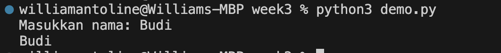

Minggu 3: Input dan Percabangan
Input
Untuk mengambil input dari user (melalui terminal), gunakan perintah input().
input()
Ketika kode di atas dijalankan, terminal akan 'hanging' untuk menunggu ada inputan. Jika user mengetikkan sesuatu (misal Halo), lalu 'Enter', string Halo akan diterima oleh program, lalu program akan berhenti.
input() bisa diisi dengan string, yang akan muncul ketika terminal meminta inputan. Misal:
input("Masukkan nama: ")
Kita bisa menyimpan hasil input ke dalam variabel. Misalkan:
nama = input("Masukkan nama: ")
Ketika user memasukkan string Budi, variabel nama akan berisi Budi.
nama = input("Masukkan nama: ")
print(nama)
Ketika dijalankan:

Conditional / Percabangan
Digunakan untuk pengambilan keputusan. Ketika kita memiliki beberapa kemungkinan kondisi, dimana setiap kondisi akan menjalankan logika yang berbeda-beda, kita bisa menggunakan Conditional/Percabangan.
Syntax:
if kondisi_1:
logic_kondisi_1
Jika kondisi_1 terpenuhi (bernilai True), logic_kondisi_1 akan dijalankan (semua kode di bawah if akan dijalankan).
Contoh:
n = 87
if n > 80:
print("Lulus")
Output yang akan muncul adalah Lulus.
Kenapa? karena kondisinya benar. n diisi 87. Kondisi yang dicek adalah apakah n lebih besar dari 80? karena benar (87 > 80), maka logic_kondisi nya dijalankan.
Contoh:
n = 73
if n > 80:
print("Lulus")
Output yang akan muncul adalah tidak ada.
Kenapa? karena kondisinya salah.
PENTING! Semua kode di bawah if yang termasuk logic_kondisi_1 harus diberi indentasi atau tab
elif dan else
Selain if, kita juga bisa menambahkan kondisi lain menggunakan elif (else if) dan else.
elif digunakan jika ada kondisi tambahan yang ingin dicek setelah kondisi pertama.
else digunakan untuk menangani semua kemungkinan lain jika semua kondisi sebelumnya tidak terpenuhi.
nilai = int(input("Masukkan nilai: "))
if nilai >= 80:
print("Lulus")
elif nilai >= 60:
print("Remedial")
else:
print("Tidak lulus")
- Jika nilai yang dimasukkan lebih dari atau sama dengan 80, maka outputnya "Lulus".
- Jika nilai lebih dari atau sama dengan 60, tapi kurang dari 80, maka outputnya "Remedial".
- Jika nilai kurang dari 60, maka outputnya "Tidak lulus".
Contoh hasil:
Masukkan nilai: 85
Lulus
Masukkan nilai: 75
Remedial
Masukkan nilai: 50
Tidak lulus
Indentasi
Indentasi adalah spasi atau tab yang digunakan untuk menandai blok kode di Python.
Python menggunakan indentasi untuk menentukan bagian mana dari kode yang termasuk dalam suatu blok, seperti di dalam if, elif, else, atau fungsi.
Jika indentasi salah, program akan error.
Contoh yang benar:
nilai = 90
if nilai > 80:
print("Lulus") # kode ini berada di dalam blok if
print("Selamat!") # kode ini juga di dalam blok if
print("Program selesai") # kode ini di luar blok if
Output:
Lulus
Selamat!
Program selesai
Contoh yang salah (indentasi tidak konsisten):
nilai = 90
if nilai > 80:
print("Lulus") # ERROR! Tidak ada indentasi
Output:
IndentationError: expected an indented block
Contoh lain:
nilai = 70
if nilai > 80:
print("Lulus")
else:
print("Tidak lulus")
print("Coba lagi tahun depan")
print("Program selesai")
- Semua kode yang berada di bawah if dan else harus diberi indentasi (biasanya 4 spasi atau 1 tab).
- Kode yang tidak diberi indentasi dianggap di luar blok.
Tips:
- Jangan mencampur tab dan spasi dalam satu file.
- Biasanya, gunakan 4 spasi untuk setiap level indentasi.
Latihan
-
Buat program yang meminta input nama dan umur dari user, lalu cetak:
Halo, [nama]! Umur kamu [umur] tahun.
-
Buat program yang meminta input nilai, lalu cetak:
- "Nilai sempurna" jika nilai 100
- "Lulus" jika nilai ≥ 80 dan < 100
- "Remedial" jika nilai ≥ 60 dan < 80
- "Tidak lulus" jika nilai < 60
Selamat mencoba!